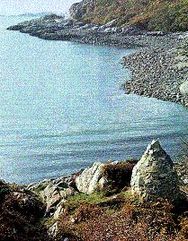

An Sealladh ma dheireadh thug Tearlach
Prince Charles's Last View of Scotland
Tune
Another arrangement
Sequenced by Ch.Souchon



|
No Text
Scottish Slow Air (6/8 time) Published in Fraser's "Airs and Melodies Peculiar to the Highlands of Scotland and the Isles" in 1816 under N0202 page 84 |
Pas de texte
Publié en 1874. |
"L'Heureux" and "Le Prince Conti", two French ships, entered Loch Boisdale in South Uist in search of the Prince on 4th September 1746. They came across Allan McDonald of ClanRanald who had accompanied Charlie from Arisaig to Benbecula on 26th April. McDonald came aboard as pilot and took the French across the Minch to Loch nan Uamh near Arisaig where the Prince was hiding. Here they lay in the loch disguised as British soldiers between 6th and 19th September. More than a hundred of the Prince's faithful chiefs and clansmen who had been lurking in the neighbourhood, availed themselves of the opportunity of getting away to France. They left Scotland on 20th September 1746; (the Prince for ever). They safely arrived in France twenty days later.
"L'Heureux" et "Le Prince Conti", deux vaisseaux français, entrèrent dans le Loch de Boisdale, dans l'île de South Uist à la recherche du Prince le 4 septembre 1746. Ils rencontrèrent Allan McDonald de ClanRanald qui avait accompagné Charlie d'Arisaig à l'île de Benbecula le 26 avril. McDonald embarqua comme pilote et conduisit les Français à travers le détroit du Minch jusqu'au Loch nan Uamh près d'Arisaig où le Prince était caché. Ils restèrent dans le loch, se faisant passer pour des soldats anglais du 6 au 19 septembre. Plus d'une centaine de chefs de clans et de leurs sujets fidèles au Prince qui étaient restés tapis dans les environs purent profiter de cette occasion pour rejoindre la France. Ils quittèrent l'Ecosse le 20 september 1746; le Prince pour toujours. Ils arrivèrent en France sains et saufs vingt jours plus tard.